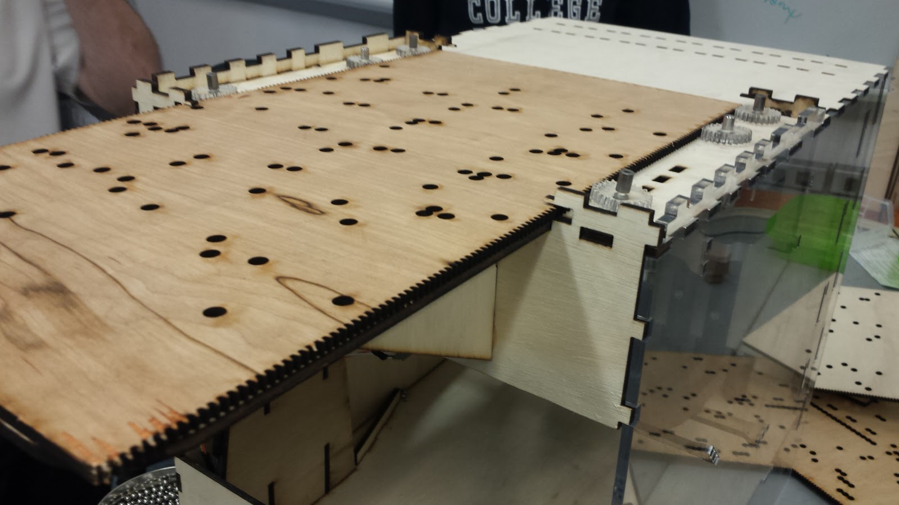
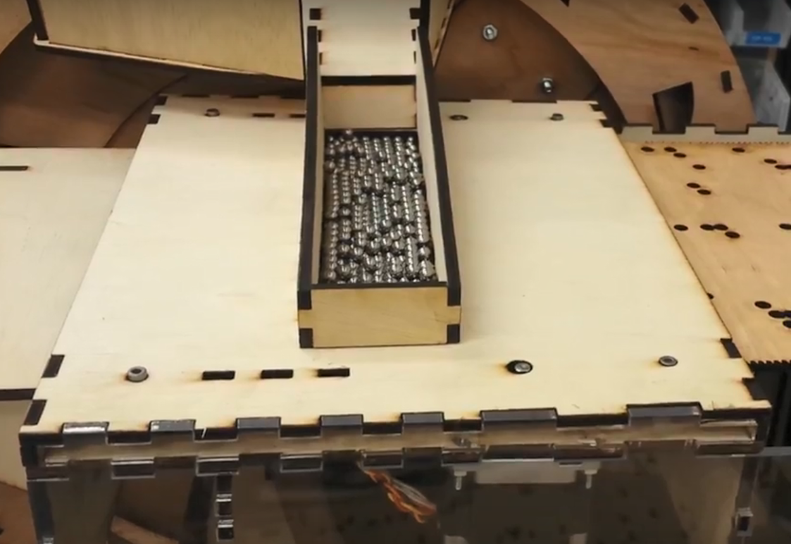
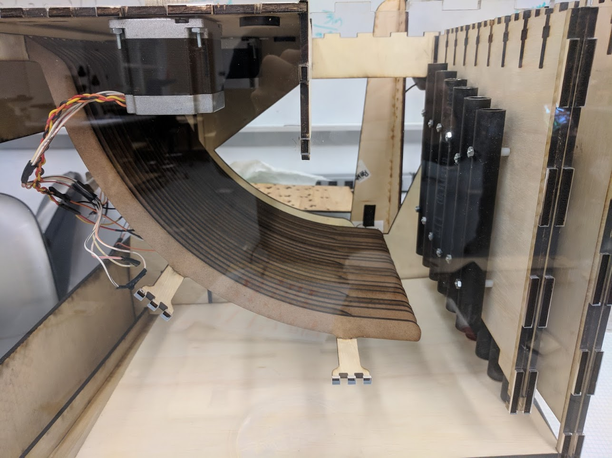
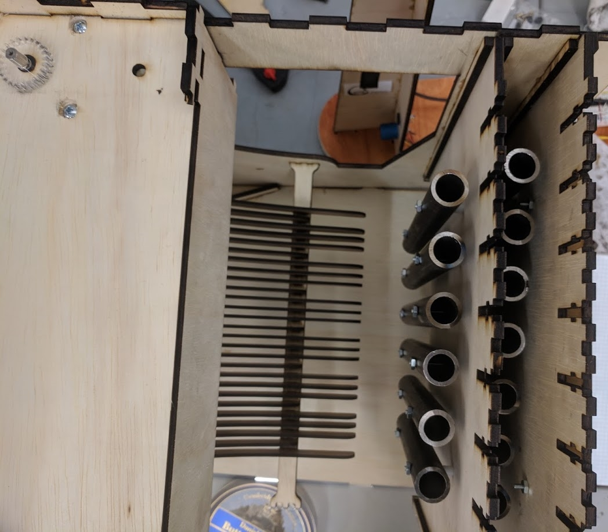
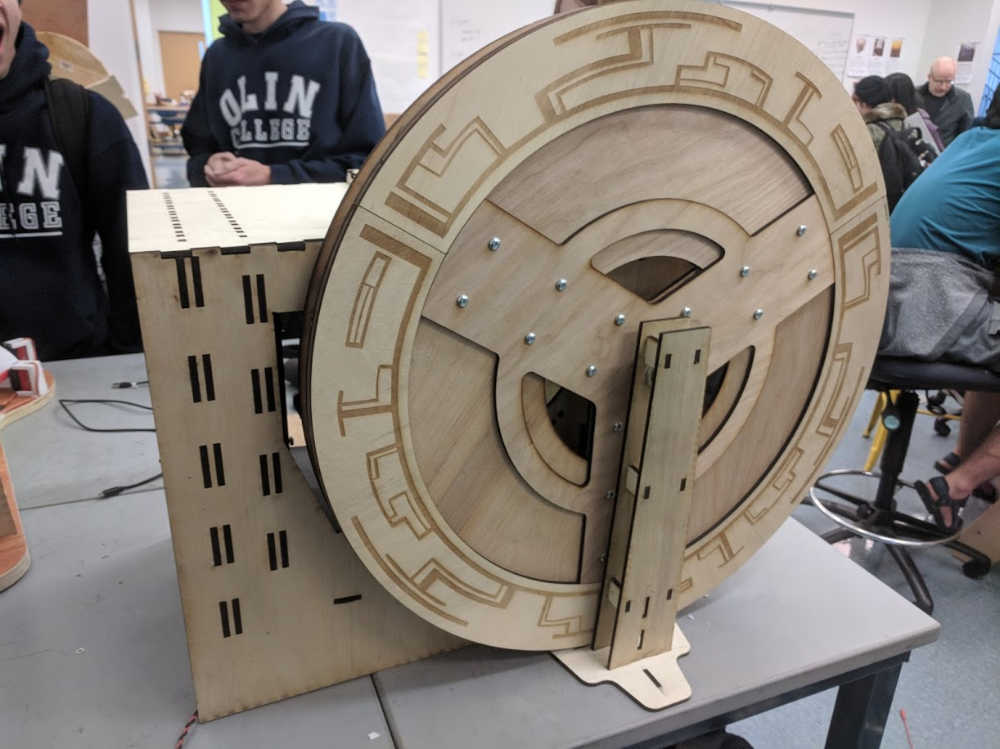
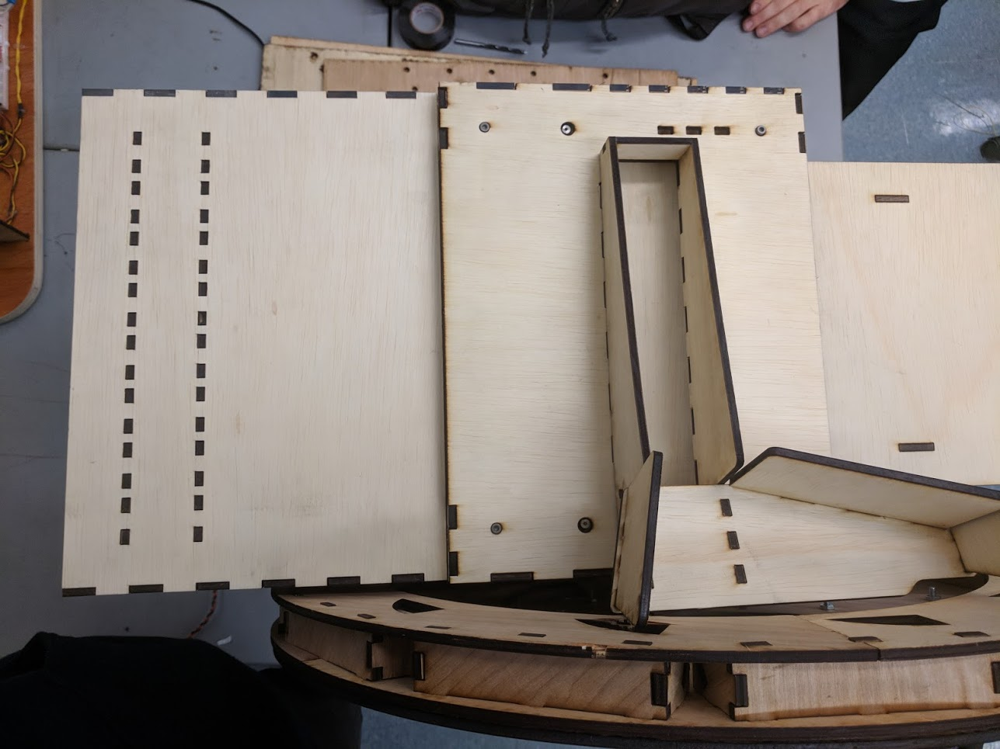

Mechanical Design
Mechanical:
Embedded CAD
Memory Reading
Each song played by the machine is stored in a sheet of mechanical memory, with notes represented by holes. The song sheet is propelled through the machine using a rack and pinion system cut into its side. Two acrylic gears are driven by stepper motors to enable precise control of the feed rate and four additional free-spinning wheels keep the sheet aligned.

Marbles are stored in a reservoir above the song sheet and drop into the holes as the sheet slides past. The marbles are carried along until they reach a fixed set of holes underneath the sheet, at which point they drop through into the next part of the machine.

Playing Notes
The machine produces sound by launching marbles at steel pipes. The pipes have each been tuned to a different note by cutting them to a specific length. They are arranged in two rows with the front row raised slightly higher than the back row. The pipes are also mounted to sliding panels for easy removal and adjustment.

Marbles are launched into the pipes by a set of curved ramps running down from the feeding mechanism. A pattern of shorter and longer ramps allows marbles to be directed at the two different rows of tubes without the need for additional routing. The ramp geometry was initially estimated using simple physics calculations, and then adjusted experimentally to correct for the effects of friction.

Marble Recycling
After hitting the pipes, marbles need to be transported back up to the marble reservoir to be used again. A set of ramps at the base of the machine collect the marbles and direct them towards the lifting mechanism.
Marbles are raised back to the top of the machine by a large wheel divided into twelve compartments. The inner edge of each compartment is angled, so marbles will roll out when they reach the highest point of the wheel’s arc. The wheel is driven by a DC motor and supported on the other side by a bearing to eliminate friction.

As marbles roll out of the wheel, they are caught by a ramp at the top and routed back into the marble reservoir to begin the cycle again.
